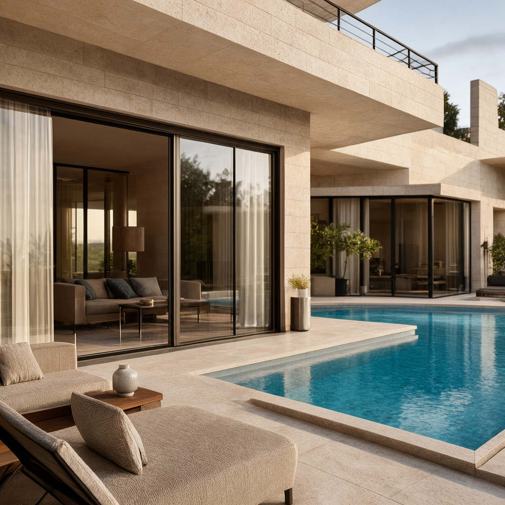

The Materiality of Memory
How surfaces record the passage of time — and why we should design for it.

A stone threshold worn smooth by generations of footsteps. A copper roof turned green by decades of rain. A wooden floor bearing the ghost of a dining table that stood there for fifty years. These are not defects. They are records.
Every building is a slow collaboration between architecture and time. The materials we choose are not static — they are active participants in a dialogue with use, weather, and the passage of years. The question is not whether a building will change, but how beautifully it will do so.
Patina as Archive
Patina is the visible history of a material's life. The verdigris on bronze tells us about the air it has breathed. The silvering of cedar tells us about the sun it has endured. The rounding of a stone step tells us about the feet that have passed. This is not deterioration — it is documentation.
In our work, we select materials that age with honesty. We avoid coatings that seal the surface against time. We prefer oils that penetrate, waxes that breathe, finishes that allow the material to continue its conversation with the environment. A limestone floor that receives the imprint of life becomes more beautiful, not less. A tadelakt wall that develops a subtle sheen where hands have touched it becomes a map of inhabitation.
Wear as Evidence of Use
The wear patterns on a building are the fingerprints of its occupants. The threshold worn deeper on the right side — most people enter leading with their right foot. The handrail polished at exactly waist height — the body's memory made visible. The floorboards darker where the sofa stood — the ghost of a living room arrangement.
We design for these patterns. We specify harder materials at thresholds, softer at edges. We anticipate the paths of movement and reinforce them. We accept that the building will be rewritten by its users, and we provide a substrate worthy of that rewriting.
The Ethics of Permanence
There is a tension in contemporary architecture between the desire for pristine permanence and the reality of entropy. The render that must never crack. The paint that must never fade. The composite that must never weather. This is a denial of physics — and a denial of the beauty of aging.
We argue for a different permanence: not the permanence of the unchanging, but the permanence of the enduring. A stone wall that stands for centuries, its surface deepening, its mortar softening, its joints breathing. A timber frame that flexes with the seasons, its joints tightening and loosening, its surface recording each winter and summer. These buildings do not resist time — they collaborate with it.
Designing for the Long Now
When we specify a material, we are making a prediction about the future. How will this stone look in fifty years? How will this timber perform in a century? How will this plaster respond to a climate that is itself changing?
We choose materials with proven track records — not the latest innovation, but the ancient technologies that have survived millennia. Lime plaster. Stone masonry. Timber framing. Clay brick. These materials have been tested by time in ways no accelerated aging chamber can replicate.
We also design for adaptability. A building that can change its use without changing its structure is a building that will survive. The palazzo that becomes a museum. The warehouse that becomes lofts. The barn that becomes a home. The bones remain; the skin adapts.
The most sustainable building is the one that is loved enough to be maintained. And we love what we can touch, what we can understand, what ages alongside us. A building that records our lives on its surfaces is a building we will fight to preserve. In the end, the materiality of memory is not just about surfaces — it is about the relationship between people and the places they inhabit.